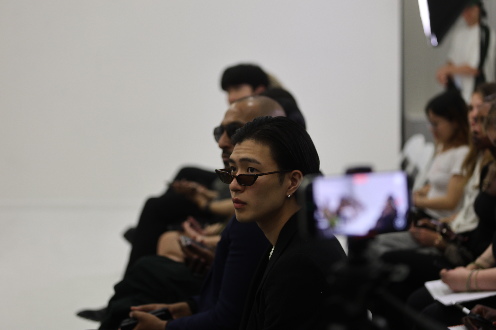
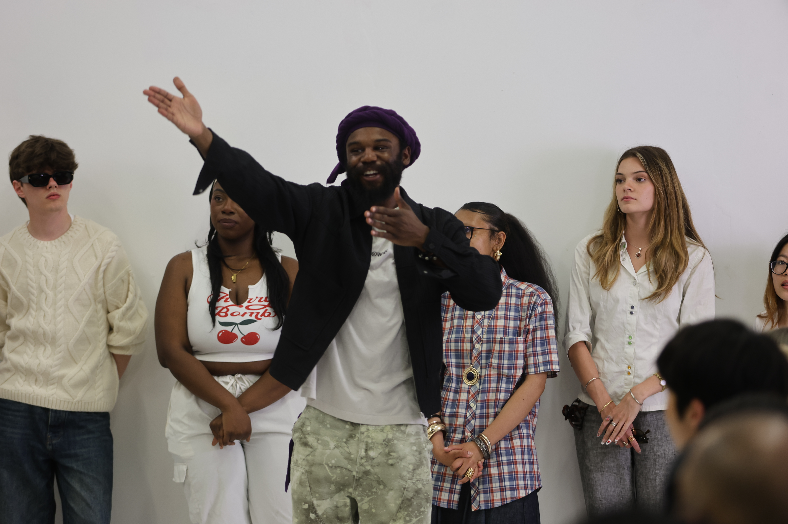
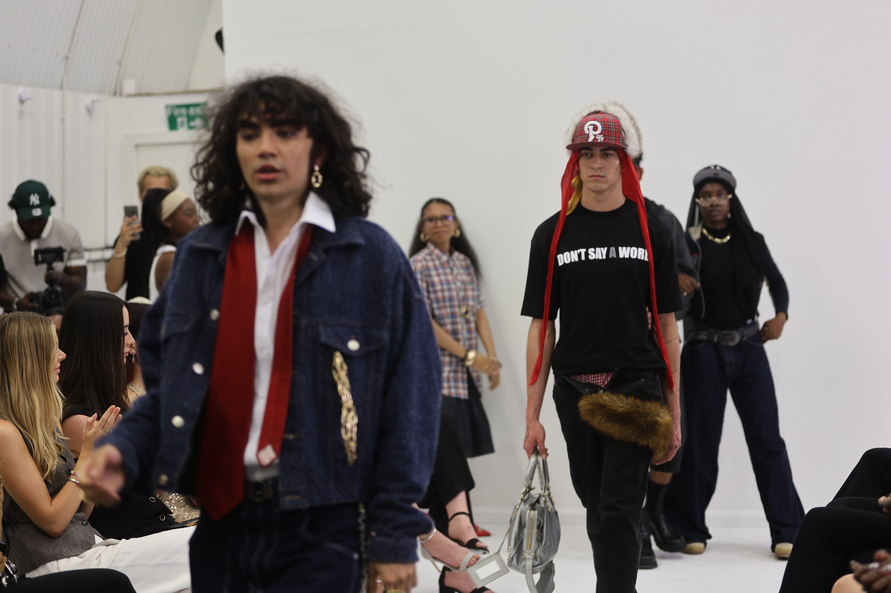
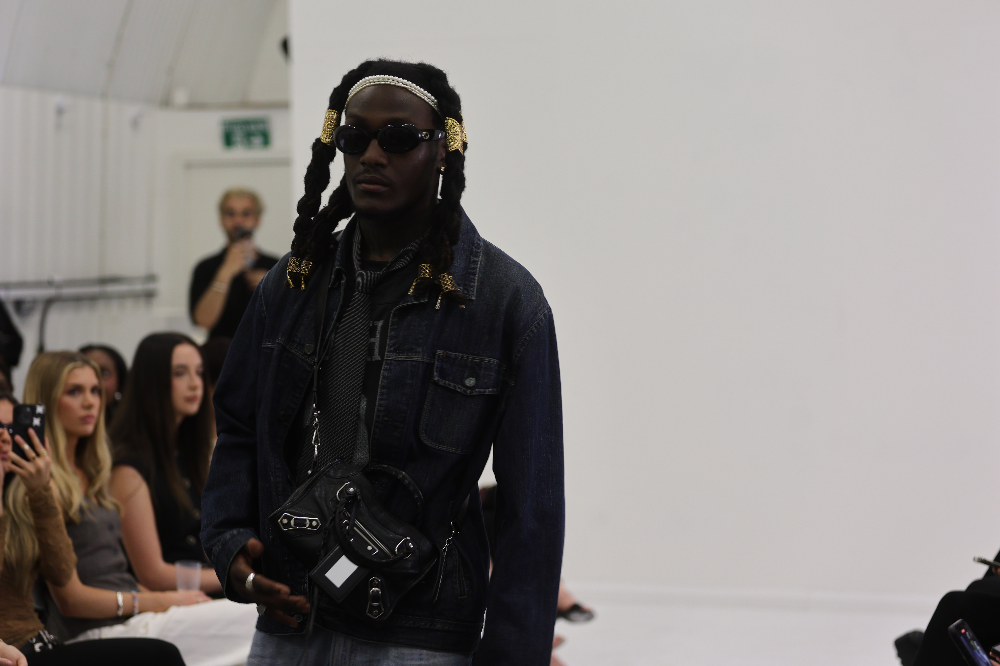
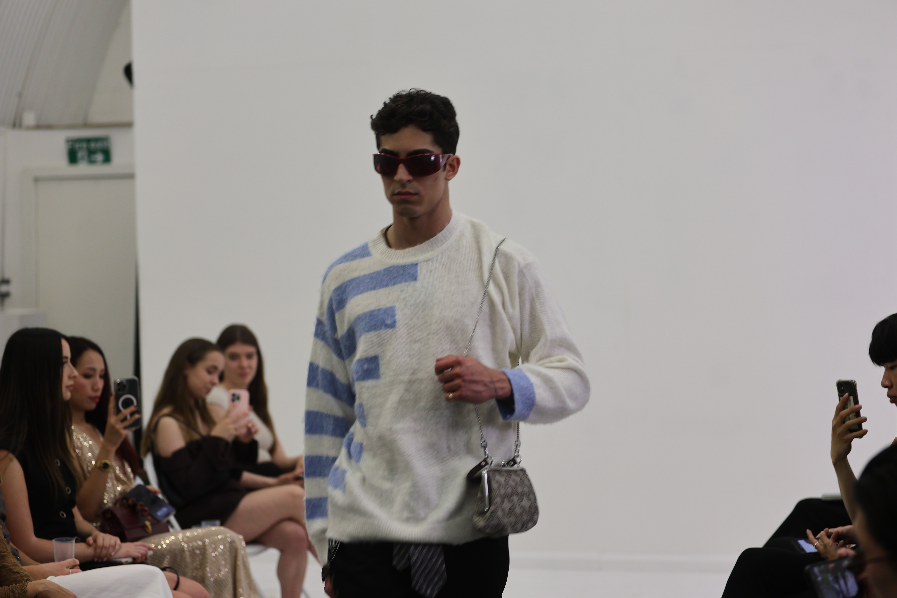
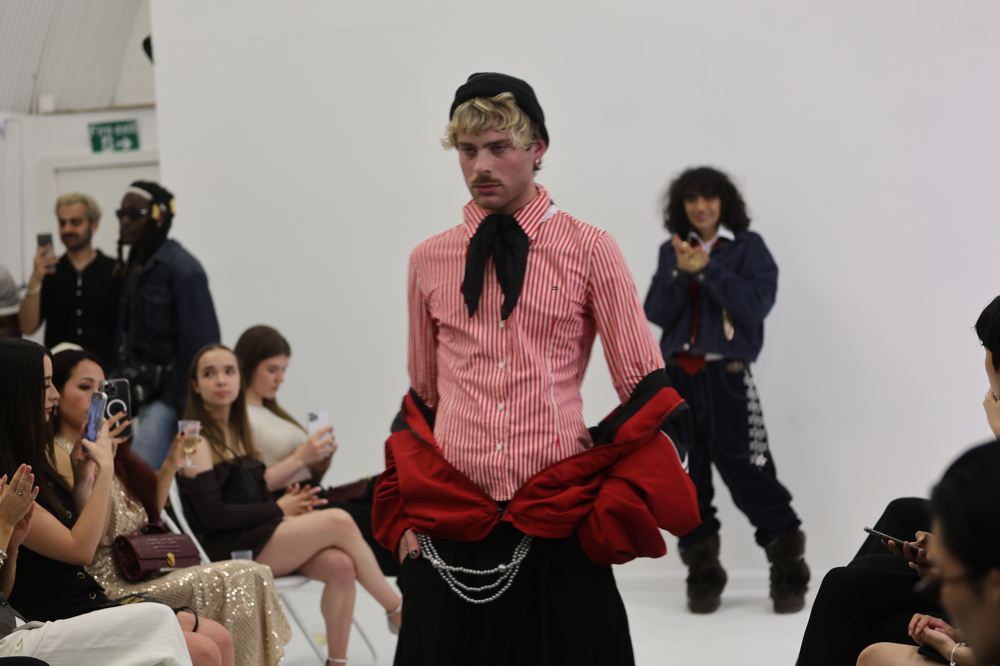
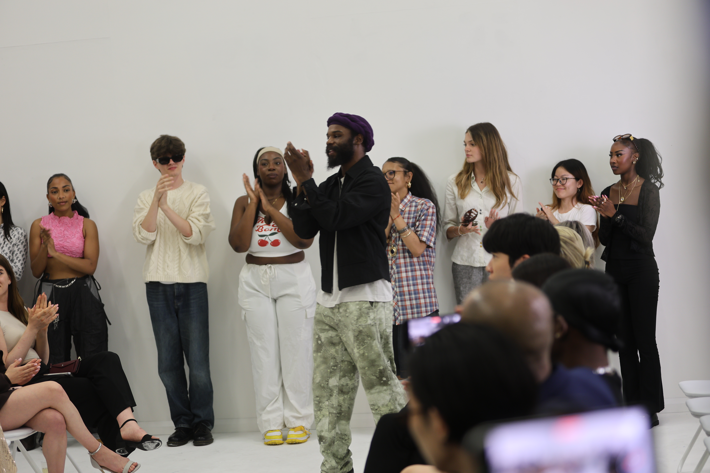
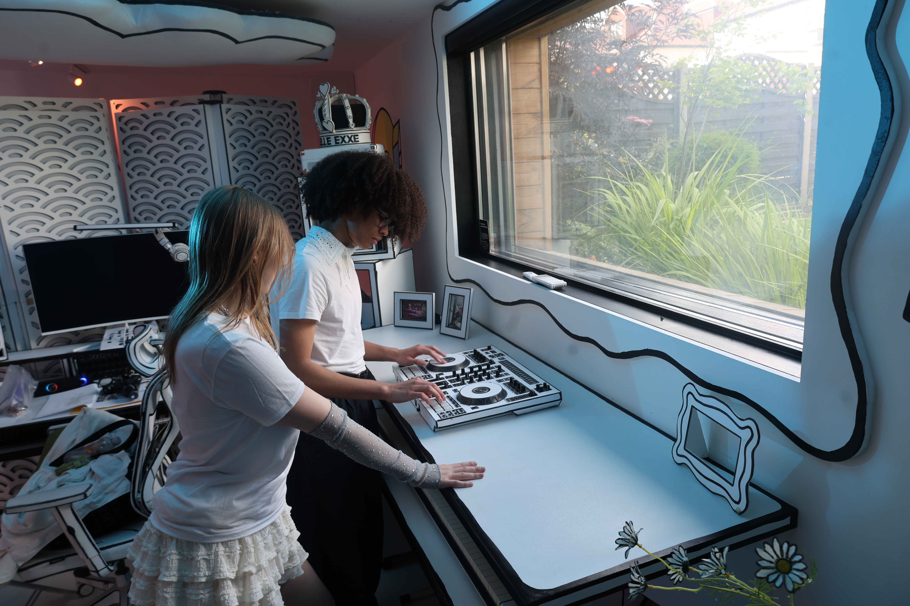
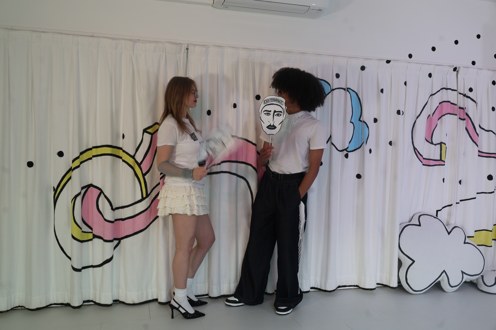
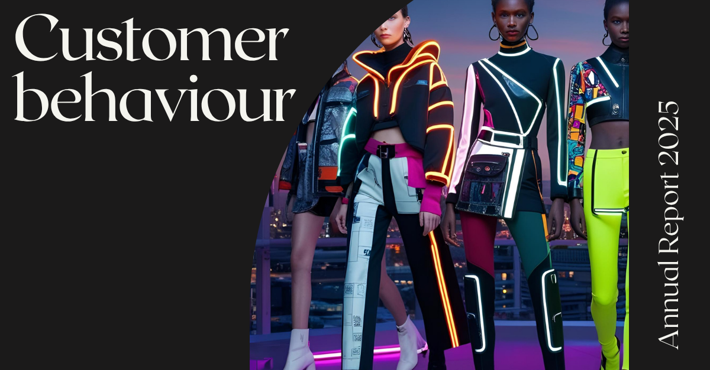

Explore creative experiences, free days out and inspiring opportunities for young people in London.
Schiaparelli: When Fashion Becomes Art
Exhibition spotlight | V&A South Kensington, London | 2026
Photograph: Innovate Generation. More photographs can be added to this gallery.
Can a dress become a work of art? The exhibition Schiaparelli: Fashion Becomes Art
at the Victoria and Albert Museum explores that question through the imaginative designs
of Elsa Schiaparelli and the fashion house she founded. It is the first UK exhibition
devoted to Schiaparelli, tracing the story from the 1920s to the present day.
Schiaparelli challenged traditional ideas of clothing through unexpected shapes,
playful details and surrealist collaborations. Among the works highlighted by the V&A
are the extraordinary Skeleton Dress and Tears Dress, both created
with Salvador Dalí in 1938, as well as designs connected with artist Jean Cocteau.
The exhibition also looks at the house's contemporary work under creative director
Daniel Roseberry.
What makes this story important to emerging creatives is its refusal to separate
disciplines. Fashion can draw on painting, sculpture, performance and storytelling.
For someone just starting out in art or design, Schiaparelli offers a reminder that
a distinctive idea can matter as much as technical convention.
Planning a London day out: The exhibition is at V&A South Kensington,
The Sainsbury Gallery, and closes on 15 November 2026. As of 20 October 2026,
the official exhibition page lists it as sold out. Check for updates
before making plans. Entry to the V&A's permanent collections is free,
so young people interested in art and design can still explore the museum.
Source Fashion Day Out: Discovering the Business Behind Fashion
Industry event spotlight | ExCeL London | 7–9 July 2026
Photograph: Innovate Generation. More photographs can be added to this gallery.
Fashion is not only about the finished outfit or the runway. Before a collection
reaches a customer, designers and brands need to consider fabrics, production,
manufacturing partners and the people behind each stage. Source Fashion brings
those parts of the industry together in one place.
The July 2026 edition was held at ExCeL London following the event's move from
Olympia London. The trade show connected buyers and fashion brands with manufacturers,
textile suppliers and sourcing partners from the UK and overseas, with a focus on
making more informed decisions about how garments are produced.
Its published programme included a Source Fashion Catwalk, expert discussions on
sustainability and transparency, practical Fashion Deconstructed workshops,
and the new Source Fashion Factory feature showing the stages of garment
production. Together, these activities offered a broader view of fashion as a
creative and commercial industry.
For young designers and aspiring fashion entrepreneurs, an industry day out like
this can be an opportunity to understand the journey from an original concept
to a product, and to see why sourcing and responsible production matter.
Next opportunity for students: Source Fashion returns to ExCeL London
on 19–21 January 2027. Students studying fashion, textiles or retail at degree level
or at a specialist college are invited on Thursday 21 January 2027,
after 11:30am. All visitors must be over 18.
This is a trade exhibition, not a general drop-in activity for under-18s.
Check registration and eligibility before travelling.
Natural History Museum: A Free Day Out for Young People in London
London activity guide | South Kensington | Free permanent galleries | Suitable for ages 14–25
Photograph: Innovate Generation. More photographs can be added to this gallery.
Looking for something interesting to do in London without spending money on admission?
The Natural History Museum in South Kensington is a place to explore science, nature
and the story of our planet. You do not need to be studying biology to enjoy it.
Whether you love photography, design, wildlife, dinosaurs or simply discovering
something new, there is plenty to inspire a day out with friends or a solo visit.
One of the first sights is Hope, the 25-metre blue whale skeleton
suspended above Hintze Hall. From there, head to the free Dinosaurs Gallery
to see fossils and a roaring animatronic T. rex. The Earth Hall is another
highlight, featuring a Stegosaurus skeleton, minerals and even a piece of Moon rock.
Three ideas for a self-guided visit:
Photography and observation: Find an unusual shape, pattern or texture
in nature and use it as inspiration for your own photography or sketchbook.
Creative research: Choose a fossil, mineral or animal and imagine how its
colours, structures or history could inspire a design, illustration or story.
Explore together: Pick two or three galleries, compare your favourite
discoveries and share what surprised you most.
These are simple ideas for visitors to try independently, rather than organised
activities run by the museum. The museum also provides suggested self-guided routes,
including a two-hour tour for people who want to see the highlights.
Plan your visit: Natural History Museum, Cromwell Road, London SW7 5BD,
near South Kensington station. It is normally open daily from 10:00 to 17:50,
with last entry at 17:30. Permanent galleries are free.
Booking a free entry ticket in advance is recommended to guarantee entry,
particularly during busy periods. Temporary exhibitions and special events may
have separate charges. Check opening dates and availability before travelling.
Tate Modern: Discovering Art and Exhibitions in London
London activity guide | Bankside, London | Free collection displays | Young creatives
Photograph: Innovate Generation.
Tate Modern, on London's South Bank, is a place to discover how artists explore the world around them through painting, photography, film, sculpture and installations. You don't need previous experience of art to enjoy a visit. Sometimes the most interesting question is simply: what does this artwork make you notice or feel?
The museum's free collection displays introduce visitors to a wide range of modern and contemporary art. The artworks can spark ideas for students interested in illustration, fashion, filmmaking, graphic design, photography or creative writing. Separate temporary exhibitions may require a paid ticket.
Creative ideas for a visit:
Explore an unfamiliar medium: Find an installation, video work or sculpture and think about how it differs from a traditional painting.
Start a visual notebook: Record colours, shapes, messages and ideas you might use in your own creative work. Follow the museum's rules on photography and sketching.
Discover an artist: Choose an artist whose work interests you, read the gallery information and explore how they developed their individual style.
For young creatives in London, a free museum visit can be a practical way to discover new techniques, spend time with friends and find inspiration beyond the classroom. These activities are suggestions for visitors to try independently, not organised sessions provided by Tate.
Plan your visit: Tate Modern, Bankside, London SE1 9TG. The collection displays are generally free to enter. Check current opening hours, access information, temporary exhibitions and any ticket requirements before travelling.
Nikola is one of our most inspiring young creatives, standing out for both her academic excellence and artistic expression.
She specializes in painting — particularly with acrylics and soft pastels — and has a unique eye for detail and color.
As part of her education, she chose A-level Art alongside her GCSEs to further refine her technique and explore her passion.
One of her favorite creations is a striking canvas artwork that captures her vibrant imagination and emotional depth.
Although Nikola doesn’t plan to pursue a professional career in art, she creates with genuine passion and joy.
For her, it’s a personal and meaningful form of expression — a hobby she truly loves.
We look forward to featuring some of her beautiful works in our upcoming exhibitions.
Behind the Summer Fashion Show: Adonis Musa
Adonis Musa, founder of Musa Showroom and creative director of The Stylist Collective, brings together fashion, culture, and storytelling...
The Stylist Collective highlights diverse, independent brands and celebrates fashion as a form of cultural expression.
We had the pleasure of attending and photographing the event as press media photographers.
Below are selected images from Adonis Musa’s latest SS26 menswear collection.







How We Built a Creative Photo Session in 3 Days
"ColourPop Dreams" – Photo Session at Doodilo Studio, Greenwich
As representatives of Innovate Generation, we organized a professional photo session at Doodilo Studio in the Greenwich area, featuring models Niki and Jesaiah. The session aimed to promote our online store along with its products and accessories.
The studio was set up in a vibrant cartoon-style scenery, enhanced with colourful lighting in striking shades of red, blue, and green. The playful yet professional atmosphere perfectly highlighted the uniqueness of the featured products, creating bold and eye-catching visuals for our campaign.
We typically build this type of session in 3 days:
Book the studio in advance
Set date and time with all involved
Prepare agreements, Policy/Health and Safety, Regulations, outfits and props
Ensure lighting availability
Create session plan and moodboard
Book for 5 hours minimum


[on photo: a fellow member of a class only, at school/college/university.]
This gives everyone time to work creatively and ensure professional results without stress.
GWI's Connecting the Dots 2025 Report: 8 Key Consumer Trends

The latest report from GWI highlights 8 major shifts in consumer behavior that will shape the market in 2025:
Podcasts are reshaping the ad game: Podcasts have overtaken radio as the preferred audio format...
Side hustles are the new normal: More people are taking on side jobs or passion projects...
The women’s sports boom: Growing global interest in women’s sports creates new brand opportunities...
Energy drinks go mainstream: Now consumed by nearly half of all consumers...
Teens are rethinking college: Many are choosing online learning and apprenticeships over university...
Smart home security tech quietly rises: Steady increase in adoption of tech-based home solutions...
Video podcast ads are on the rise: YouTube and livestreams are dominating content strategies...
TikTok Shop drives social commerce: 90% of users who shopped through TikTok say they’d do it again...
What This Means for Brands
Marketing: Explore podcast partnerships. HR/Recruiters: Prepare for flexible work demands. Sports Industry: Back female athletes. E-commerce: Use AI and cross-platform strategies. Brand Identity: Emphasize ethics and transparency.